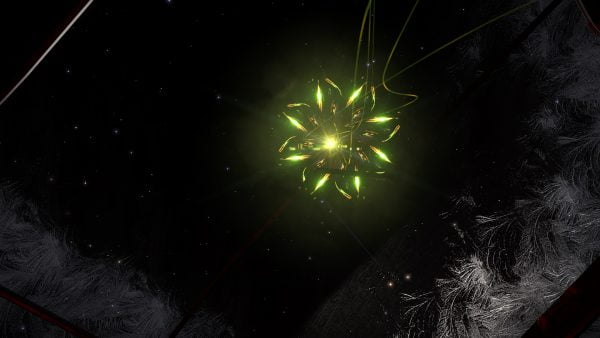

Jump. Scoop. Jump. Scoop. Cursing in between… That was how the last several hours had gone for Dutch Foster while attempting to catch up with the Gnosis. He was nearly there, just about a half hour out. The Pleiades was now clearly visible, the large blue and white stars in the cluster shining brightly through the black. Jump. Scoop. Jump. Scoop. Jump… …”HYPERSPACE CONDUIT UNSTABLE” the onboard computer warned, as the Curiositas began to lurch and roll.. “Bloody Hell!” Dutch Foster exclaimed, surprised and bewildered. “I know damn well she's in good shape…” The ship continued to roll, jittering with steady turbulence. Whooosh! The Curiositas dropped out of hyperspace into an unknown system, and the ships power and modules began to shut down. “Not good” Foster quipped. He looked around, wondering if maybe someone had sabotaged his ship at the station in Jaoi. The ship was rolling slightly, and unresponsive. Even the reboot sequence was dead.
Space began to distort far off the starboard bow. "What the hell?..."”" Dutch Foster asked himself, then a look of horror formed across his face, turning him pale. “Oh no... Oh hell no!” He realized what was happening, but it was already far too late. A large vessel appeared from the black distortion. It was greenish grey in color, clearly alien, and obviously using very powerful technology. They were the Thargoids he had been hearing about. Dutch Foster waited as the alien vessel approached, unsure of their intentions. The Curiositas was defenseless and adrift, unable to respond in anyway. If the ship attacked, there was no chance, no hope. Dutch Foster manually opened the hatch to his customized escape pod, making preparations to bail out if the Thargoid vessel opened fire.

The flower shaped vessel's outer parts began to glow yellow and an energy beam erupted from the center. Dutch Foster cursed, but then realized it wasn't doing any damage to the Curiositas hull or systems. He was being scanned... They were looking for something… He remembered hearing that they would sometimes leave ships unharmed if they were to drop certain types of cargo. He waited for a second, then looked back at the cargo hatches containing DMehaffy's sake. He thought about it for a second, and a smirk formed on his face. “They'll never go for it.” He said to himself. The energy beam disappeared, and the Thargoid vessel let out a strange grumbling sound. It then turned and began to fly back towards the Pleiades with a frightening speed. “Hah!” Dutch Foster said with a laugh, very thankfully. The helm of the Curiositas began to light up and flicker. He quickly closed the escape pod and hopped back into the pilot seat. As he grabbed the flight stick, he saw blackness begin to appear in front of the Thargoid ship. It soon vanished, leaving behind a small disruption in space. He piloted the Curiositas close to the wake, then scanned it. The data would be of value to Canonn, as well as other researchers and organizations. Dutch Foster took a moment to calm down, feeling lucky to have met the Thargoids and having lived to tell the tale when so many others had not.
Dutch Foster replotted the course to the Gnosis, and engaged the ship's FSD. As the drive charged up, he had a flurry of thoughts running through his head concerning the encounter. The Curiositas jumped into hyperspace, and reappeared at the next star in the line. Fuel scooping began, and after a quarter turn around the star, was completed. He was still thinking about why the Thargoid vessel hadn't opened fire. “What are they looking for?” he mumbled. He engaged the ship's FSD again, and pointed the ship towards its next destination.
“INCOMING MESSAGE” The alert broke Dutch Foster's train of thought, and he looked at the comms panel. It was not a message from the Gnosis or anyone in Canonn. Foster disengaged the FSD of the Curiositas and dropped out of cruise. He took another look at the message. It was an encrypted transmission, with the initials ZKR listed at the bottom. With a curious smile, he punched a code into the comms panel. The message decrypted making the words recognizable. Foster began reading it. “Hello again, my friend. It's good to hear that you've come out of hiding and found a place to settle down. I knew you liked to have a few drinks, sure, but I could never picture you as a bartender. Anyway, I'm coming to speak with you and I have a surprise. SHE is with me, and would very much like to see you and our little clam crazed friend. We'll be waiting for you at the Gnosis Gin Bar. There's also business to discuss. See you soon, my friend. o7”
Dutch Foster closed the message and let out a long sigh. “It's been so long… Too long since I've last seen her.” He thought to himself. He leaned over in the pilot seat, thinking heavily on the message, unsure if he was ready to go back just yet. There were so many things he wanted to tell her, but he didn't have the words. He thought about it a little longer, then a devilish smile formed across his face. “She'll start one hell of a ruckus if I don't get there quick. That poor bar maid, she has no idea. Yeah, I better get moving.” He laughed and replotted the course for the Gnosis. The FSD was activated, charging up for hyperspace. Soon after, the Curiositas was on its way.
Back at the Gnosis, two mysterious individuals walked into the Gin Bar and sat down at one of the side tables, their backs to the rest of the room. The bar maid walked over to greet them. “What can I get… for you?...” She paused briefly, noticing the female who had sat down had glowing blue eyes, and a mechanical left arm. She turned her head to look at the barmaid, sending shivers down the poor woman's spine. The man at the table with her spoke up “I'd like a bottle of rum, and a glass of water. Dutch Foster will pick up the tab when he gets here.” The bar maid looked confused, and just nodded. She promptly fetched the rum and the water, and set them down in front of the man. He smiled, opened the bottle of rum, and took a huge gulp. “Yis!” he said with a grin across his face. The bar maid promptly replied “Glad you like it. Please let me know if you need anything else.” She quickly hurried back around the bar, keeping her eye on the two patrons. She had never seen them around before, and they looked like trouble. She wondered what had become of Dutch Foster, hoping he would return soon.
 The Curiositas finally arrived in Hyades Sector AQ-Y D81. The Gnosis was there, settled into a nice orbit. It only took just a bit of time to make it there in cruise. The Curiositas dropped in and the station control relayed their usual message. “Lakon Delta Uniform Tango, please request docking clearance before attempting to land.” Dutch Foster looked at the side of the Gnosis, and realized they had changed the paint. “Sweet!” he exclaimed.” It was now the same Canonn orange color that he was used to. He smiled, then sent out the request to dock, and it was soon granted. Upon nearing the landing pad, Foster hailed the mechanic crew down below. “Bring me a cart, I've got some cargo that needs to get unloaded immediately.” The Curiositas touched down, and was soon lowered into the ship bay. Foster switched the power off and ran towards the tail end of the ship. He opened the rear door, ran and grabbed the cart from the worked at the end of the ramp, and hurried back up. He snatched the two crates of the sake up on the cart, then started running with it like a bat out of hell down the ramp, through the end of the docking bay, and on down the corridor in the direction of the Gin Bar.
The Curiositas finally arrived in Hyades Sector AQ-Y D81. The Gnosis was there, settled into a nice orbit. It only took just a bit of time to make it there in cruise. The Curiositas dropped in and the station control relayed their usual message. “Lakon Delta Uniform Tango, please request docking clearance before attempting to land.” Dutch Foster looked at the side of the Gnosis, and realized they had changed the paint. “Sweet!” he exclaimed.” It was now the same Canonn orange color that he was used to. He smiled, then sent out the request to dock, and it was soon granted. Upon nearing the landing pad, Foster hailed the mechanic crew down below. “Bring me a cart, I've got some cargo that needs to get unloaded immediately.” The Curiositas touched down, and was soon lowered into the ship bay. Foster switched the power off and ran towards the tail end of the ship. He opened the rear door, ran and grabbed the cart from the worked at the end of the ramp, and hurried back up. He snatched the two crates of the sake up on the cart, then started running with it like a bat out of hell down the ramp, through the end of the docking bay, and on down the corridor in the direction of the Gin Bar.
The bar maid smiled wide upon the sight of Dutch Foster's return. He rolled the sake over to the edge of the bar and lifted the boxes off the cart. “Sir… We have a couple of patrons there, they look like the could be trouble.” the bar maid said, pointing in the direction of the side table. “The man said you would pick up the tab, is that okay?” Foster took a glance over at them, then turned back to the bar maid. “That's fine.” Foster smiled, then started walking towards the side table with the two troublesome looking patrons.
“Zeph!” Foster yelled. The man at the table turned around then stood up. “Yis… Long time no see, my friend. How are you doing? How's the bartender life? I see you've got a beautiful young bar maid to keep you company and watch over the patrons.” Zeph leaned over past Foster's shoulder and winked at the bar maid. Her face reddened with blush, and she turned around to hide the embarrassment. Dutch Foster started laughing and pointed at Zeph. “No chasing the bar maid, you!” He then looked behind Zeph at the woman still sitting. “Hello again, m'lady.” Foster said to her. She turned her head to have a look at him, then smiled. She got up and walked over to him, then put her arms around him. “Dutchie...” The bar maid, still standing behind the bar, looked over and saw the woman hugging Dutch Foster. “Well I'll be damned.” She muttered to herself. Foster turned his head to Zeph. “Thank you, Zeph. Thank you.” he said. The woman with the mechanical arm let go of Foster and asked with a serious look “Where is he?” He pointed behind the bar, and they both began to walk towards the water tank in the back. The creature in the shadow was staring at him blankly, still menacing, but then the woman caught his gaze. She stopped in front of the tank and put her hand on the glass. With an excited look, the creature began to move out from the shadow. It came into full view, a tiny purple creature, eight tentacles, and huge eyes. It moved to the front of the tank, tentacles curled up and began to rub its head on the glass where the woman had her hand. The bar maid shook her head in disbelief. She looked at Foster and asked “Who is she? What is her name?” He hesitated to answer and looked at the woman with the mechanical arm, waiting for her to respond. “Bonnie. Bonnie Lotara.” The bar maid turned her head to one side and asked “That's not really your name, is it?” Zeph and Dutch Foster both began to laugh. Bonnie stood up. “Where are the clams?” she said with an excited expression. The bar maid pointed to the small fridge behind the bar. Bonnie opened it and grabbed the clams, then dropped a large handful into the tank. The purple creature went into a frenzy, grabbing the clams and stuffing them its hidden mouth as fast as it could. “Now you're a happy little bugger, aren't you?” The Purple creature briefly stared at the cooler where the clams were kept then twirled around, pulling itself back into the shadow of the log. “Fat, happy, and nappy!” Bonnie said with a laugh. The creature had returned to its hiding place, where it began to stare at the bar maid. Bonnie looked over at her and warned her “Look here, missy! Mr. Purple is my little buddy. You best take good care of him.” The bar maids eyes were wide, but it was more out of surprise than fear. “…and you better take good care of my Dutchie, too.” Bonnie further warned. The bar maid looked at the creature in the tank, then looked over at Dutch Foster. His face was a bit flushed, red cheeks, but the rest pale. She could tell he was embarrassed.
Zeph put his hand on Dutch Foster's shoulder and began to speak. “I'll be heading to a system to do a little bit of recon work. I think I've got a line on a bunch of credits which found their way into the hands of pirates. I'll send you the location later on. I will need you to pick something up for me before you come to get me from the planet. “Huh?” Foster said, seeming a bit confused. “Credits. You know. Those things that pay bar tabs.” Zeph joked. Foster shook his head, then looked over at Bonnie. “You in on this?” he asked. Bonnie shook her head. “I've got other matters to tend to. I'll be back around eventually, though.” Zeph pulled out a tablet, and showed it to Foster. “There is an item that may either be in Federation or Imperial hands, not sure which. It contains information on the pirates who stole the credits, particularly how to get into their vault and get to the money. The Federation task force picked it up first, but it may have gotten snatched by the Imperials during the skirmishes. Last I heard, it was down here in the area. I've narrowed it down to two systems - Pleiades Sector IR-W D1-55 and HR 1185. There's an emergency beacon near the 6th planet in that Pleiades Sector system, and another one close to the first planet of the A star in the HR system. The Federation and imperials both got hit hard, I'll put it that way. It shouldn't be too far off the path for you, and your bosses might want to have a set of eyes in there, anyway. Just watch for the Thargoids.” Dutch Foster's eyebrow raised. “Yeah, I had a run in with them earlier. They knocked me out of hyperspace and shut my ship down so they could scan me. They're looking for something.” “Indeed, they are.” Zeph replied.
Bonnie looked over at Dutch Foster with worry in her eyes. He noticed her concern. He walked over to her and picked up her hand, rubbing the palm with his thumbs. Bonnies eyes raised to look at Foster. “Don't get yourself into trouble. Don't die out there.” Bonnie said. Foster smiled. “Don't worry, m'lady.” he said. “They're taking people, I've heard. So don't use your escape pod. You see them, you run. You promise me.” Bonnie said, worried and concerned. Foster nodded. “I'll avoid the ‘goids.” Bonnie's eybrows tilted down, and she gave Foster a quick jab in the ribs. “You be serious!” She yelled at him. She pulled her fist back again, and Foster threw his arms up. “I got it, I won't get killed. I promise!” Zeph shook his head and laughed, then made his way towards the corridor. Bonnie nodded, then turned around to follow him. She stopped just past the threshold of the Gin Bar, then looked back over her shoulder at Foster. “A bartender? Really?” she asked. Foster started to laugh. “It kept me out of trouble until you showed up!” Bonnie smiled then walked off down the corridor.
Foster turned back around and noticed that the bar maid had a smirk on her face. “She's a tough cookie.” He said to her, and she giggled and nodded. “Mh hmm. Also, since I've been here fourteen hours straight, I believe I'm due for a little bit of overtime pay?” Foster laughed. “Yeah, sure. I'll get the sake put away, and I'll get that added in. Good job for a first day. The Gin Bar is still standing, no brawls, and no shady deals gone down.” The bar maid giggled again. “You mean none other than Zeph sending you to retrieve Federation intelligence data?” Foster paused… “Uh… I don't think they're worried about a little pirate intel right now. They've got a bigger problem.” She nodded with acceptance. “Yeah, you've got a point. My name is Laurel Tate, by the way.” She said. Foster's eyes went wide. “Oh yeah… Sorry, miss, I was in a bit of a hurry yesterday. You came along at just the right moment.” “I suppose I did.” Laurel said, smiling as she started making her way towards the front of the Gin Bar. “I'm going to go get some rest. I'll see you in the morning.” Foster waved, then walked over behind the bar, opening up a fridge and clearing space to put the sake.
“Dutch Foster!” someone yelled. Startled, Dutch Foster turned around. Standing in the doorway of the bar was man in a Canonn Research and Development Uniform. He looked a bit upset. Foster knew exactly who he was, and why he had come. “Oh, hey there, DMehaffy! I brought your sake back with me. Sorry about the delay. If I hadn't run into a stupid pirate, I would've had time to dock.” Dmehaffy walked over to the bar, looked around, then spotted the crates. Foster pulled out one of the bottles and handed it to him. DMehaffy sat on a stool, and popped the lid of the bottle with a flick of his wrist. He sniffed the top briefly, then took a sip. “Yep, that's it. A pirate tried to steal this from you?” he asked, looking back over at Foster. “No, I think the pirate was fresh out of the factory and just wanted someone to shoot at.” Foster replied, then walked behind the bar and started putting away a crate of the sake. DMehaffy took a few more swigs, then looked over at Foster. “I hear you had a run in with Thargoids. Tell me about it.” Foster leaned over the bar and put his hands together, twirling his thumbs, then began to speak. “They seem to be looking for something particular when they scan ships. They knocked me right out of hyperspace and scanned me, but they didn't attack. Their ship went back in hyperspace or where ever it came from.” “Witch Space.” DMehaffy corrected Foster. “They've also given the Feds and the Imps several destroyed battle fleets. We do know that they will attack if they see you carrying their probes and sensors, but they also don't like it when you are carrying Meta Alloys. They seem very interested in escape pods, as well. I'm not sure I want to know why, but we need to find out. If you have any more run ins with them, please gather detailed information and report it to me or another researcher.” Foster leaned back from the bar and nodded. “Will do.” He said, then began putting more of the sake into the cooler.
“Weren't you once a barnacle hunter?” DMehaffy asked. “Yep. I did some dabbling with them last year for a spell.” Foster replied from behind the bar, out of DMehaffy's view. DMehaffy took another swig of his sake, and stretched his arms out across the backs of the barstools next to him. “There was a mega barnacle site found with 36 barnacles growing in a formation. We don't know what it is, yet, but we still need people on the ground down there checking it out. You interested?” Foster stood up from the bar, having finished putting away the Sake. He thought about it for a second, and laughed. “Sure, why not?” he said. I've got a job to help a friend out with soon, and I'll be checking out some slagged Federation and Imperial fleets. After that, I'll have time to run down there and check things out.” DMehaffy smiled. He gulped down the last of the sake, and stepped back from the bar. “They're believed to be Thargoid, you know.” Dutch Foster paused, looking confused. “You mean the barnacles?” DMehaffy nodded then turned around and walked out of the Gin Bar, leaving Foster a bit stunned. “Damn…” he muttered to himself.
Foster took a long around the Gin Bar. It was late, no one else was around, and there didn't seem to be anyone outside. He walked over to the comms unit, and punched in a code. After a few beeps, the words “Secure Connection Established” flashed across the screen. There was no visual, and the voice that began to speak was obviously distorted to mask the identity. “Mr. Foster, I assume Ms. Tate hasn't made her move yet, considering you're alive enough to give me a ring this late at night.” “Nope, I don't think she's here to kill me. I hope she's not, anyway. She only just told me her name. I don't know what Alliance Intelligence Services want with me, but I think she's new to the undercover game. You're sure she's working for them?” Foster replied. “I know she's working for them. You don't attend closed meetings with their intelligence officials if you're not a part of their intel community. What makes you think she's new to the game?” the unidentified voice asked. Foster gave a long sigh “Generally, if you're going to come to interview for a bar maid position, you aren't going to wear such fancy clothes. Fancy clothes, sure, but not those… They were authentic garments made in Sol, not knock offs, and very high priced. No way she'd buy more of that on a bar maid's pay, and if she is just a civilian who could afford that, she has clearly taken a step down coming here. Also, why clothing from Sol if she is from one of the Alliance worlds? …And she acts timid. I seriously wonder if she even knows how to defend herself.” The unidentified voice erupted in laughter. “Maybe, maybe not. Don't judge a book by its cover. Someone with your experience should know better.” Foster smiled and shook his head. “That might be true, but that still leaves the questions of why is she here, and why was she carrying a file on me when she left Alioth. Do you know what it is the Alliance might want from me? You think they might be aware of my past dealings with the Feds? Foster asked. “I don't know.” The unidentified voice replied. “If the Alliance were aware of your past, they wouldn't send a rookie, that's for damn sure. We don't really know, but for right now, just be glad she's not working for Imperial Intelligence. You would've already disappeared out in the black and no one would ever figure out what happened.” Foster shook his head. “I took this bartender job to stay out of trouble, change my life, get out of the intelligence gig. I wonder why this is happening after all this time.” Foster said. The unidentified person laughed again. “You don't retire from the intelligence gig, Mr. Foster. You know that. You can go inactive, you can go live a normal lie, but you don't get to live a normal life after the things you've been involved in. My suggestion is to get into character. Are you armed?” Foster looked annoyed. “I don't carry weapons on the Gnosis, they're all on my ship. That's where I'll be sleeping at night.” He then turned his head, hearing footsteps coming from the corridor. “I've got to go. If you learn of anything else, send me a message.” Foster said, then he cut the transmission.
Foster walked behind the bar and started filling a sink full of water, adding a bit of detergent to it. He looked over the bar to see a station security guard walk past. There weren't many dishes, and it didn't take Foster long to wipe down the bar and get ready for the next day. He kept thinking about the events of the day. The Thargoid encounter, finally seeing Bonnie again, taking the job from Zeph, and the other job from DMehaffy. He also thought about his problem with Laurel Tate, the barmaid. The person in the comms was right. As much as Dutch Foster tried, there would never be a normal life. He let out a long sigh as his realization set in. “How long do I have before shit hits the fan?” he said to himself. He grabbed a handful of clams and threw into the water tank, and watched the tentacles fly out of the shadows to snatch them away. He looked up at the clock, which read 04:31. Foster was tired, he had been awake for far too long. He walked around to the edge of the bar and sat down in the first chair. He kept thinking, and finally, his mind came back to Bonnie. He wanted to see her again. He had so much he wanted to say to her, and there was never enough time. Always never enough time. Minutes went by, and finally, Foster had fallen asleep on the bar. Mr. Purple watched him from the shadows of the water tank, staring, and waiting. After a few moments someone else caught the gaze of the little purple creature. His stare followed the person as they slowly moved up to the bar. Foster was asleep, and unaware someone had walked up behind him. WHACK… …THUD Mr. Purple's eyes followed the hand that struck Foster, and then watched as his forehead bounced on the bar.